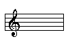

Circle of Fifths
Your browser does not support the canvas element.
Play the Scale
Spin-a-Key
High
Med
Low
Lowest
Sorry, your browser doesn't support canvas. Please try another.
Set Key
+1 b or -1 #
+1 # or -1 b
Key Signature
